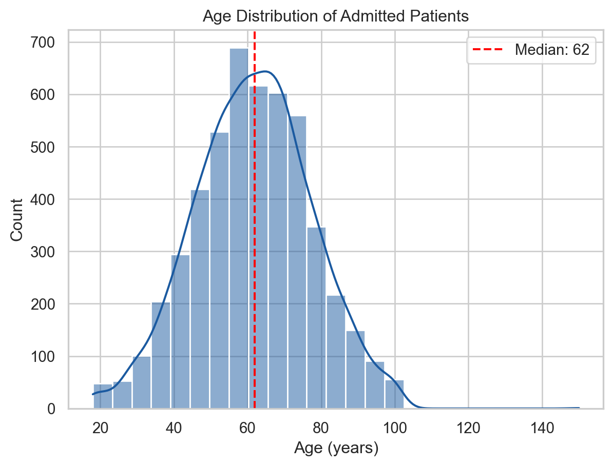
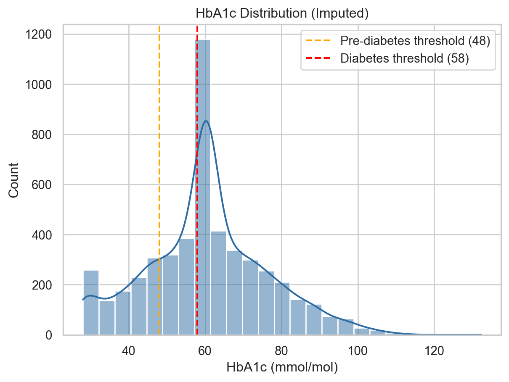
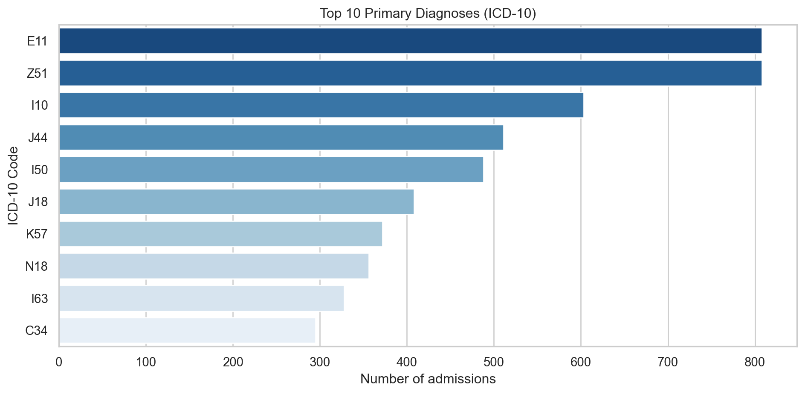
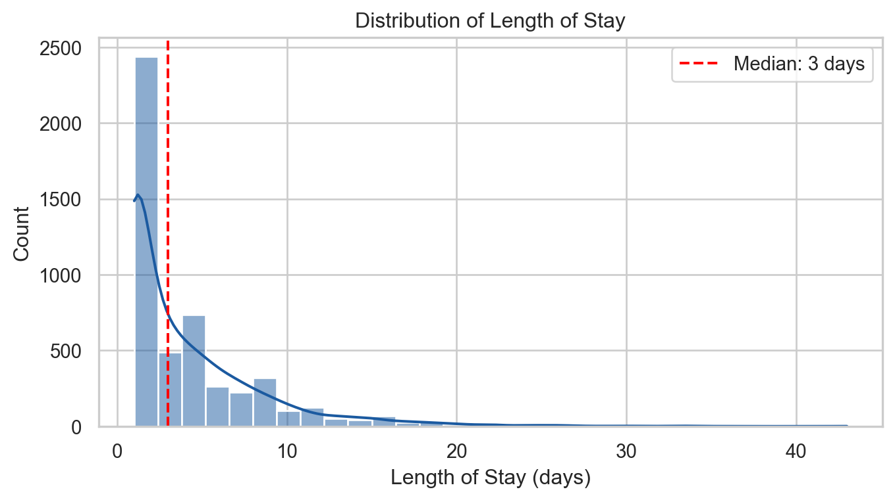
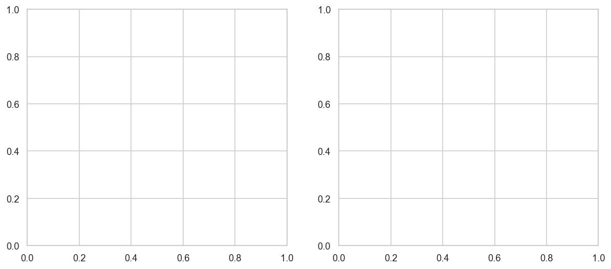
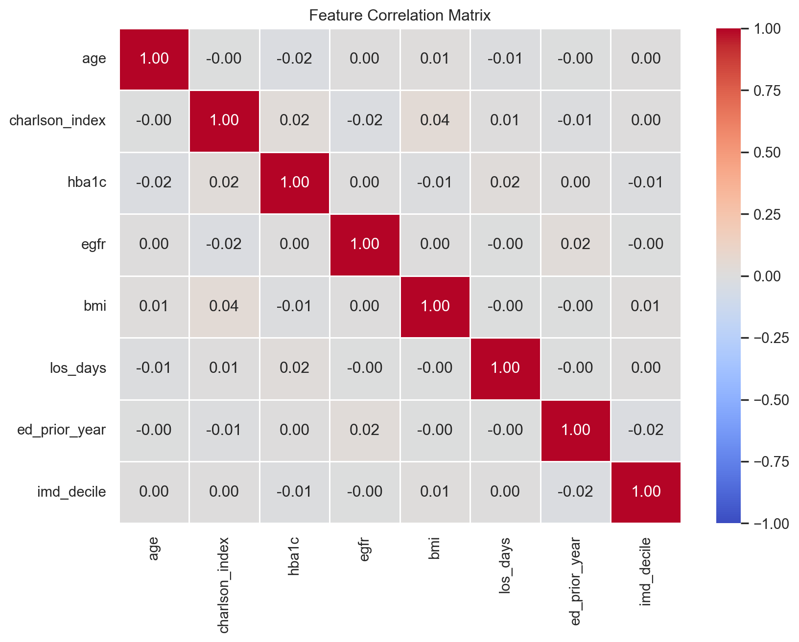
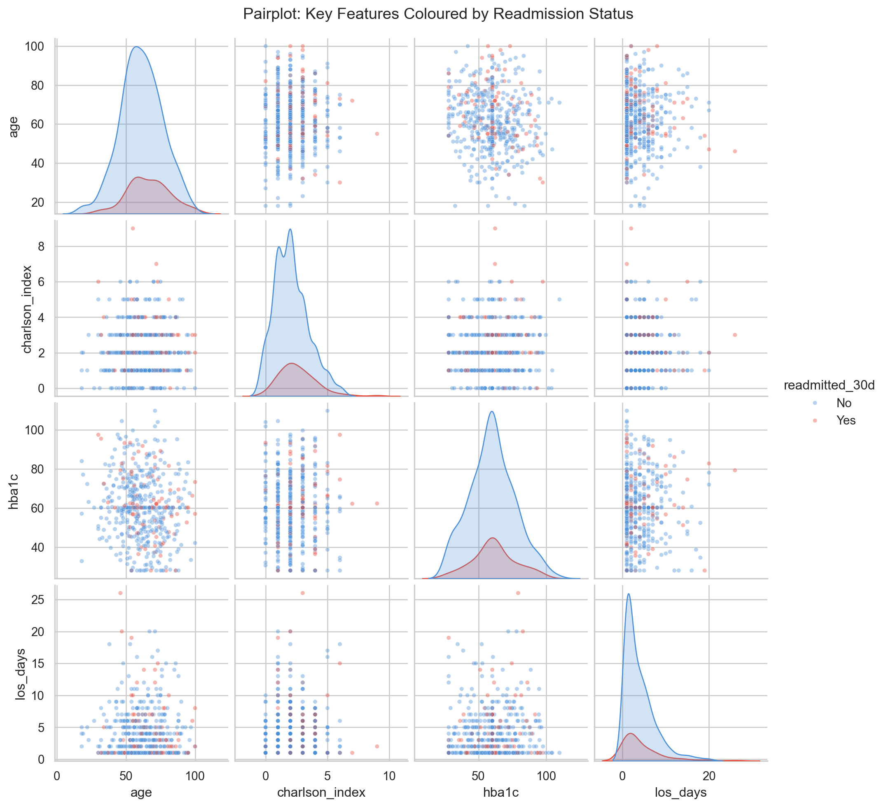
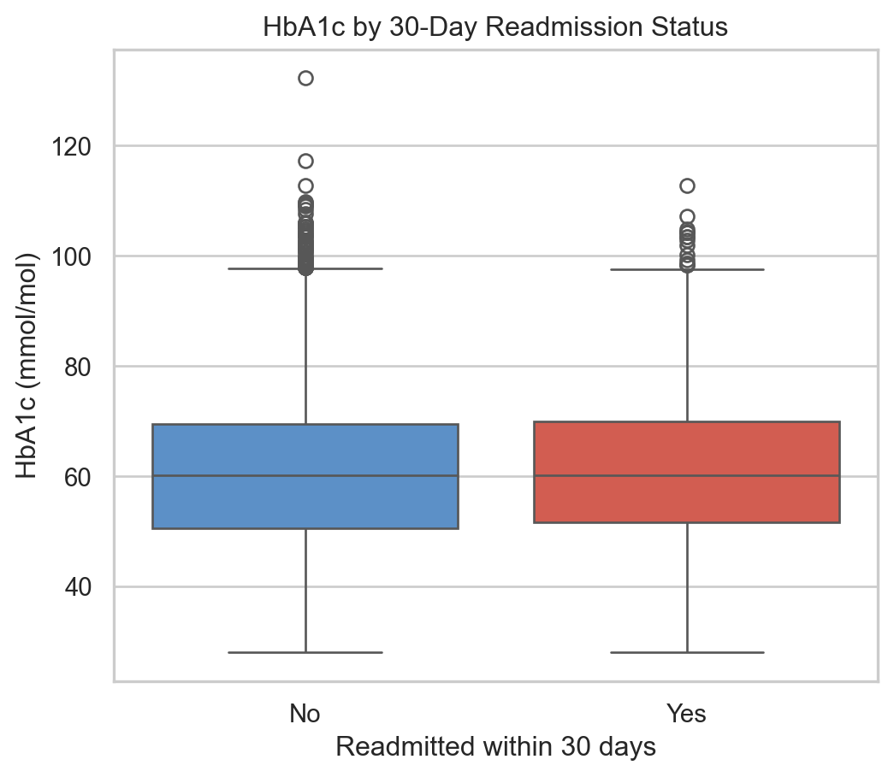

import pandas as pd
import matplotlib.pyplot as plt
import seaborn as sns
# Use a clean, readable style
sns.set_theme(style="whitegrid", palette="muted")Exploratory Data Analysis & Visualisation
⏱ 25 minutes
Exploratory Data Analysis (EDA) is the systematic process of summarising and visualising a dataset before modelling. Good EDA reveals data quality issues, suggests feature engineering ideas, and builds clinical intuition about which variables might predict the outcome.
The de facto standard plotting and visualisation library for Python is matplotlib. It is incredibly versatile but can be a little complex and require a fair bit of code to get plot looking how you want. There are libraries which build on top of matplotlib to provide a nice interface; here we will look at the popular seaborn library.
Setting up Visualisation
Univariate Analysis — Understanding Each Variable
Always start by looking at each variable in isolation.
Continuous variables: histograms and KDE plots
# Age distribution
hist_age = sns.histplot(df["age"], bins=25, kde=True, color="#1B5AA0")
hist_age.axvline(df["age"].median(), color="red", linestyle="--", label=f"Median: {df['age'].median():.0f}")
hist_age.set_title("Age Distribution of Admitted Patients")
hist_age.set_xlabel("Age (years)")
hist_age.legend()
hist_age
# HbA1c distribution
hist_hba1c = sns.histplot(df["hba1c"], bins=25, kde=True, color="#2E6DA4")
hist_hba1c.axvline(48, color="orange", linestyle="--", label="Pre-diabetes threshold (48)")
hist_hba1c.axvline(58, color="red", linestyle="--", label="Diabetes threshold (58)")
hist_hba1c.set_title("HbA1c Distribution (Imputed)")
hist_hba1c.set_xlabel("HbA1c (mmol/mol)")
hist_hba1c.legend()
hist_hba1c
Categorical variables: bar charts
# Primary diagnoses — top 10
top_diagnoses = df["primary_diagnosis"].value_counts().head(10)
plt.figure(figsize=(10, 5))
sns.barplot(x=top_diagnoses.values, y=top_diagnoses.index, palette="Blues_r")
plt.title("Top 10 Primary Diagnoses (ICD-10)")
plt.xlabel("Number of admissions")
plt.ylabel("ICD-10 Code")
plt.tight_layout()
plt.show()/var/folders/bq/2w1p57q54r78thfjpfy2cbrc0000gp/T/ipykernel_28500/3045856047.py:5: FutureWarning:
Passing `palette` without assigning `hue` is deprecated and will be removed in v0.14.0. Assign the `y` variable to `hue` and set `legend=False` for the same effect.

Exercise 7
Create a histogram of los_days (length of stay). Does the distribution look normal?
Add a vertical dashed line at the median.
What does the shape tell you about length of stay patterns in this cohort?
Answer
plt.figure(figsize=(8, 4))
sns.histplot(df["los_days"], bins=30, kde=True, color="#1B5AA0")
plt.axvline(df["los_days"].median(), color="red", linestyle="--",
label=f"Median: {df['los_days'].median():.0f} days")
plt.title("Distribution of Length of Stay")
plt.xlabel("Length of Stay (days)")
plt.legend()
plt.show()
The distribution is right-skewed — most patients have short stays (1–5 days) but a minority have very long stays. This is typical of NHS inpatient data. The long tail means mean > median and suggests we should use log(los_days) as a feature, or use tree-based models that are robust to skew.
Bivariate Analysis — Variable vs Outcome
Now we examine how each predictor relates to our outcome of interest: readmitted_30d.
Box plots and violin plots
fig, axes = plt.subplots(1, 2, figsize=(12, 5))
# Length of stay by outcome
sns.boxplot(
data=df, x="readmitted_30d", y="los_days",
palette={"No": "#4A90D9", "Yes": "#E74C3C"},
ax=axes[0]
)
axes[0].set_title("Length of Stay by Readmission Status")
axes[0].set_xlabel("Readmitted within 30 days")
axes[0].set_ylabel("Length of Stay (days)")
# Charlson index by outcome
sns.violinplot(
data=df, x="readmitted_30d", y="charlson_index",
palette={"No": "#4A90D9", "Yes": "#E74C3C"},
inner="box", ax=axes[1]
)
axes[1].set_title("Charlson Comorbidity Index by Readmission Status")
axes[1].set_xlabel("Readmitted within 30 days")
axes[1].set_ylabel("Charlson Comorbidity Index")
plt.tight_layout()
plt.show()/var/folders/bq/2w1p57q54r78thfjpfy2cbrc0000gp/T/ipykernel_28500/1488815547.py:4: FutureWarning:
Passing `palette` without assigning `hue` is deprecated and will be removed in v0.14.0. Assign the `x` variable to `hue` and set `legend=False` for the same effect.
/var/folders/bq/2w1p57q54r78thfjpfy2cbrc0000gp/T/ipykernel_28500/1488815547.py:14: FutureWarning:
Passing `palette` without assigning `hue` is deprecated and will be removed in v0.14.0. Assign the `x` variable to `hue` and set `legend=False` for the same effect.

Correlation matrix
# Select numeric features
numeric_features = ["age", "charlson_index", "hba1c", "egfr", "bmi",
"los_days", "ed_prior_year", "imd_decile"]
corr_matrix = df[numeric_features].corr()
plt.figure(figsize=(9, 7))
sns.heatmap(
corr_matrix, annot=True, fmt=".2f", cmap="coolwarm",
center=0, vmin=-1, vmax=1,
linewidths=0.5, linecolor="white",
)
plt.title("Feature Correlation Matrix")
plt.tight_layout()
plt.show()
Important points
A correlation matrix tells you about linear pairwise relationships only. High correlation between features (multicollinearity) can destabilise logistic regression coefficients but is less of a problem for tree-based models like Random Forest. Always examine clinically — a correlation between charlson_index and egfr is expected, since CKD contributes to the Charlson score.
Pair plot — quick multivariate overview
A pair plot shows scatter plots for every pair of numeric variables, coloured by outcome:
# Sample 500 patients for speed
df_sample = df.sample(500, random_state=42)
g = sns.pairplot(
df_sample[["age", "charlson_index", "hba1c", "los_days", "readmitted_30d"]],
hue="readmitted_30d",
palette={"No": "#4A90D9", "Yes": "#E74C3C"},
plot_kws={"alpha": 0.4, "s": 15},
diag_kind="kde"
)
g.fig.suptitle("Pairplot: Key Features Coloured by Readmission Status", y=1.02)
plt.show()
Exercise 8
Create a boxplot showing hba1c by readmitted_30d.
- Do readmitted patients have higher HbA1c on average?
- Is there much overlap between the two groups?
- What does this tell you about HbA1c as a standalone predictor?
Answer
plt.figure(figsize=(6, 5))
sns.boxplot(
data=df, x="readmitted_30d", y="hba1c",
palette={"No": "#4A90D9", "Yes": "#E74C3C"}
)
plt.title("HbA1c by 30-Day Readmission Status")
plt.xlabel("Readmitted within 30 days")
plt.ylabel("HbA1c (mmol/mol)")
plt.show()
# Means
print(df.groupby("readmitted_30d")["hba1c"].mean().round(1))/var/folders/bq/2w1p57q54r78thfjpfy2cbrc0000gp/T/ipykernel_28500/3239661228.py:2: FutureWarning:
Passing `palette` without assigning `hue` is deprecated and will be removed in v0.14.0. Assign the `x` variable to `hue` and set `legend=False` for the same effect.

readmitted_30d
No 60.3
Yes 60.7
Name: hba1c, dtype: float64There is typically a modest difference in median HbA1c (~3–5 mmol/mol) between the groups, but with substantial overlap. This means HbA1c alone is a weak predictor — consistent with clinical experience. Better predictions come from combining multiple features in a model.